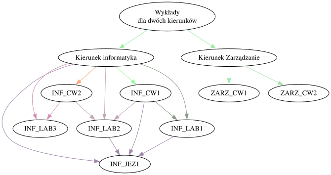
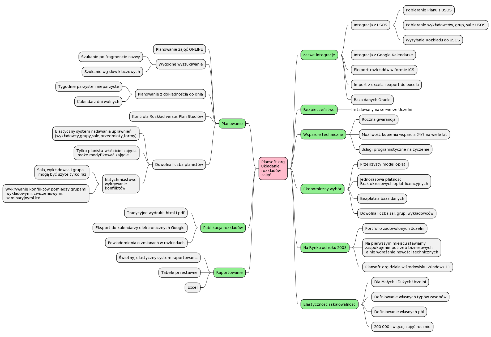

Rozkłady zajęć bez konfliktów, chaosu i Excela
Poszukujesz narzędzia dla swojej Uczelni, które pozwoli na sprawne planowanie zajęć w skomplikowanym modelu zależności pomiędzy grupami — planowane jednocześnie przez kilku planistów? Plansoft.org to profesjonalna aplikacja do ręcznego układania rozkładów zajęć, gotowego do publikacji w kalendarzach elektronicznych, na stronie Uczelni lub w systemach takich jak USOS i Bazus.
Setki zależności. Kilku planistów. Zero miejsca na błąd.
Poszukujesz narzędzia, które pozwoli na sprawne planowanie zajęć w skomplikowanym modelu zależności pomiędzy grupami — na przykład takim, jak w modelu przedstawionym na diagramie poniżej — a na dobitkę planowanie realizowane jest jednocześnie przez kilku planistów?
Plansoft.org to program do ręcznego układania rozkładów zajęć przez jednego lub wielu planistów. Gotowy rozkład jest udostępniany za pomocą kalendarzy elektronicznych, za pomocą stron www lub jest przesyłany do innych systemów, takich jak USOS lub Bazus.

Wszystko, czego potrzebuje Twój dział planowania
Dzięki aplikacji już nigdy więcej nie przydzielisz omyłkowo tej samej sali do dwóch różnych zajęć.
Zero konfliktów sal
Program pilnuje, byś nigdy nie przydzielił omyłkowo tej samej sali do dwóch różnych zajęć.
Każda forma zajęć
Bezbłędnie zaplanujesz zajęcia dla grup wykładowych, ćwiczeniowych, laboratoryjnych i seminaryjnych — bez kolizji.
Relacje między grupami
Zdefiniujesz zależności pomiędzy grupami, które program wykorzystuje do wykrywania kolizji.
Tygodnie parzyste i nieparzyste
Zaplanujesz zajęcia odbywające się cyklicznie co tydzień lub tylko w tygodnie parzyste i nieparzyste.
Nierealizowane zajęcia
Oznaczysz w systemie zajęcia, które nie zostały zrealizowane, bez utraty historii planu.
Zasoby i preferencje
Przechowasz informacje o dodatkowych zasobach i ulubionych terminach wykładowców.
Automatyczne powiadomienia
Nie musisz pamiętać o informowaniu o zmianach — powiadomienia wysyłane są automatycznie.
Wielu planistów naraz
Wspólna pula zasobów dla dowolnej liczby planistów — zmiany są widoczne dla innych natychmiast.
Relacyjna baza danych
Dane trzymane są na sprzęcie Uczelni — łatwo je analizować i integrować z innymi systemami.
Cała aplikacja na jednej mapie

Jak wdrożyć aplikację?
Wdrożenie Plansoft.org przebiega według sprawdzonego, pięcioetapowego schematu.
Zapoznanie się z aplikacją
Uczelnia zapoznaje się z dwoma filmami dostępnymi na stronie Plansoft.org.
Demo na żywo
W przypadku zainteresowania organizowane jest godzinne demo, podczas którego prezentowana jest aplikacja i udzielane są odpowiedzi na pytania. Demo odbywa się zdalnie.
Przygotowanie danych
Uczelnia przesyła pliki Excel z danymi do załadowania do programu (siatka godzinowa, wykładowcy, grupy, sale, przedmioty, formy zajęć, ewentualnie inne informacje, np. struktura grup, którzy wykładowcy prowadzą które przedmioty, lista planistów).
Instalacja i wgranie danych
Aplikacja jest instalowana na Państwa serwerze. Ładujemy do bazy danych przekazane pliki Excel.
Szkolenie planistów
Przeprowadzane jest wszechstronne szkolenie dla planistów w Uczelni — z reguły są to dwa dni po cztery godziny. Infolinia jest dla Państwa dostępna 24 godziny na dobę.
Program Plansoft.org — opłaty
Wycenę wdrożenia wykonujemy na podstawie liczby aktywnych planistów (nie wliczamy osób, które tylko czytają plany) oraz ewentualnych wymagań, takich jak integracje.
- Opłata jednorazowa — brak opłat subskrypcyjnych
- Nieograniczona liczba wykładowców, grup i zasobów
- Program objęty roczną gwarancją
Pakiet wsparcia
Produkt jest sprzedawany z rocznym pakietem wsparcia. Pakiet można wykupić w kolejnych latach — minimalny okres świadczenia usług to 6 miesięcy, najdłuższy 2 lata. Wsparcie obejmuje:
- doraźną pomoc dla użytkowników systemu (asysta 24h)
- pomoc w wykonywaniu zestawień i raportów
- analizę potrzeb Uczelni
- bezpłatne pobieranie aktualizacji programu
- pomoc techniczną i administrację serwerem bazy danych Oracle
- pomoc w skonfigurowaniu kopii bezpieczeństwa
- wykonywanie niewielkich zmian w kodzie programu
Materiały, instrukcje i dokumentacja
Zapewniamy bezpłatną pomoc w instalacji programu — poniżej znajdziesz wszystkie potrzebne pliki.
Instalacja
Dla planistów
- Podręcznik użytkownika
- Współpraca zespołu planistów
- Publikacja rozkładów zajęć
- Publikacja za pomocą Kalendarzy Elektronicznych
- Powiadomienia e-mail o zmianach w rozkładach
- Raportowanie
- Przegląd możliwości programu
- Rzadziej używane funkcjonalności
Zaufały nam uczelnie i instytucje w całej Polsce
Uczelnie korzystające z oprogramowania Plansoft.org
Firmy korzystające z rozwiązań wdrożonych przez Software Factory
Najczęściej zadawane pytania
Lista najczęściej zadawanych pytań o Plansoft.org.
Jak wiele osób jednocześnie może planować zajęcia? +
Zajęcia mogą być planowane jednocześnie przez dowolną liczbę osób. Program na bieżąco weryfikuje rozkłady zajęć i uniemożliwia powstanie konfliktów polegających na użyciu tego samego zasobu wielokrotnie w tym samym czasie.
Czy program można użyć w szerszym aspekcie planowania, np. do planowania dyżurów? +
Tak. Program można użyć do planowania zarówno rozkładów zajęć, jak również do rezerwowania sal wykładowych, ciągów klimatyzacyjnych, innych zasobów, do planowania dyżurów nauczycielskich, ale także do planowania np. służb, patroli, absencji. W programie możemy tworzyć nowe formy rezerwacji (np. absencja), a dla zasobów można definiować atrybuty opisujące te zasoby (np. rozmiar dysku twardego wypożyczanego laptopa).
Czy program sam układa rozkłady zajęć? +
Nie. Baza danych Plansoft.org może zostać zasilona przez inny system — struktura tabel Plansoft.org jest jawna, stosunkowo prosta i udokumentowana.
Czy program posiada wsparcie w zakresie planowania zajęć z przedmiotów obieralnych i dzielenia rocznika na podgrupy oraz wykrywania kolizji? +
Tak.
Porozmawiajmy o Twojej Uczelni
Plan zajęć, rezerwowanie sal i zasobów — napisz, zadzwoń albo umów bezpłatne demo.
Potrzebujesz pomocy? Skontaktuj się z nami
Napisz do nas na WhatsAppie — odpowiadamy szybko i konkretnie.
Otwórz WhatsApp